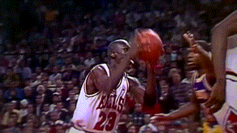

Michael Jordan

 "By acclamation, Michael Jordan is the greatest basketball player of all time."[5] He was integral in helping to popularize the NBA around the world in the 1980s and 1990s,[10] becoming a global cultural icon in the process. He played 15 seasons in the NBA, winning six championships with the Chicago Bulls. f> He is the principal owner and chairman of the Charlotte Hornets of the National Basketball Association (NBA) and of 23XI Racing in the NASCAR Cup Series Many of Jordan's contemporaries have said that Jordan is the greatest basketball player of all time.[199] In 1999, an ESPN survey of journalists, athletes and other sports figures ranked Jordan the greatest North American athlete of the 20th century, above Babe Ruth and Muhammad Ali.[215] Jordan placed second to Babe Ruth in the Associated Press' December 1999 list of 20th century athletes.[216] In addition, the Associated Press voted him the greatest basketball player of the 20th century.[217] Jordan has also appeared on the front cover of Sports Illustrated a record 50 times.[218] In the September 1996 issue of Sport, which was the publication's 50th-anniversary issue, Jordan was named the greatest athlete of the past 50 years.Jordan was a shooting guard who could also play as a small forward (the position he would primarily play during his second return to professional basketball with the Washington Wizards),[32] and as a point guard.[63] Jordan was known throughout his career as a strong clutch performer. With the Bulls, he decided 25 games with field goals or free throws in the last 30 seconds, including two NBA Finals games and five other playoff contests.[181] His competitiveness was visible in his prolific trash-talk[182] and well-known work ethic.[183][184] Jordan often used perceived slights to fuel his performances. Sportswriter Wright Thompson described him as "a killer, in the Darwinian sense of the word, immediately sensing and attacking someone's weakest spot."[3] As the Bulls organization built the franchise around Jordan, management had to trade away players who were not "tough enough" to compete with him in practice. To help improve his defense, he spent extra hours studying film of opponents. On offense, he relied more upon instinct and improvization at game time.[185]
Noted as a durable player, Jordan did not miss four or more games while active for a full season from 1986–87 to 2001–02, when he injured his right knee.[32][186] Of the 15 seasons Jordan was in the NBA, he played all 82 regular season games nine times.[32] Jordan has frequently cited David Thompson, Walter Davis, and Jerry West as influences.[187][188] Confirmed at the start of his career, and possibly later on, Jordan had a special "Love of the Game Clause" written into his contract, which was unusual at the time, and allowed him to play basketball against anyone at any time, anywhere.
"By acclamation, Michael Jordan is the greatest basketball player of all time."[5] He was integral in helping to popularize the NBA around the world in the 1980s and 1990s,[10] becoming a global cultural icon in the process. He played 15 seasons in the NBA, winning six championships with the Chicago Bulls. f> He is the principal owner and chairman of the Charlotte Hornets of the National Basketball Association (NBA) and of 23XI Racing in the NASCAR Cup Series Many of Jordan's contemporaries have said that Jordan is the greatest basketball player of all time.[199] In 1999, an ESPN survey of journalists, athletes and other sports figures ranked Jordan the greatest North American athlete of the 20th century, above Babe Ruth and Muhammad Ali.[215] Jordan placed second to Babe Ruth in the Associated Press' December 1999 list of 20th century athletes.[216] In addition, the Associated Press voted him the greatest basketball player of the 20th century.[217] Jordan has also appeared on the front cover of Sports Illustrated a record 50 times.[218] In the September 1996 issue of Sport, which was the publication's 50th-anniversary issue, Jordan was named the greatest athlete of the past 50 years.Jordan was a shooting guard who could also play as a small forward (the position he would primarily play during his second return to professional basketball with the Washington Wizards),[32] and as a point guard.[63] Jordan was known throughout his career as a strong clutch performer. With the Bulls, he decided 25 games with field goals or free throws in the last 30 seconds, including two NBA Finals games and five other playoff contests.[181] His competitiveness was visible in his prolific trash-talk[182] and well-known work ethic.[183][184] Jordan often used perceived slights to fuel his performances. Sportswriter Wright Thompson described him as "a killer, in the Darwinian sense of the word, immediately sensing and attacking someone's weakest spot."[3] As the Bulls organization built the franchise around Jordan, management had to trade away players who were not "tough enough" to compete with him in practice. To help improve his defense, he spent extra hours studying film of opponents. On offense, he relied more upon instinct and improvization at game time.[185]
Noted as a durable player, Jordan did not miss four or more games while active for a full season from 1986–87 to 2001–02, when he injured his right knee.[32][186] Of the 15 seasons Jordan was in the NBA, he played all 82 regular season games nine times.[32] Jordan has frequently cited David Thompson, Walter Davis, and Jerry West as influences.[187][188] Confirmed at the start of his career, and possibly later on, Jordan had a special "Love of the Game Clause" written into his contract, which was unusual at the time, and allowed him to play basketball against anyone at any time, anywhere.